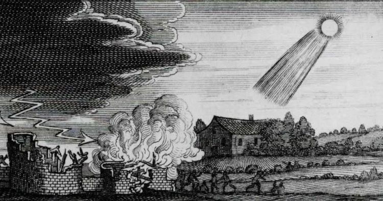
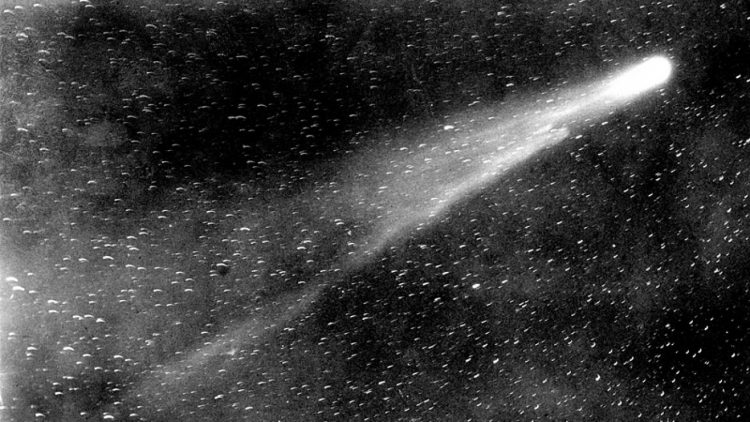
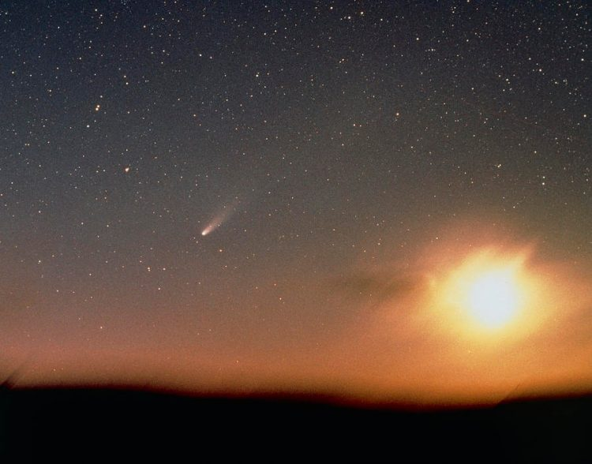
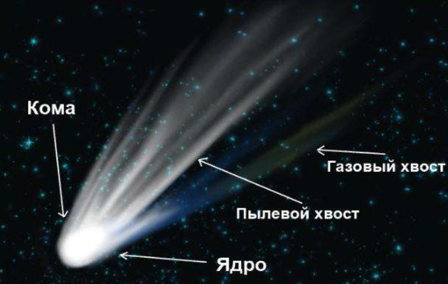

Комета Галлея
Комета Галлея (официальное название 1P/Halley) — яркая периодическая комета, возвращающаяся к Солнцу каждые 75—76 лет. Названа в честь английского астронома Эдмунда Галлея. С кометой связаны метеорные потоки эта-Аквариды и Ориониды.
Комета Галлея является первой кометой, для которой определили эллиптическую орбиту и установили периодичность возвращений.
Несмотря на то, что каждый век появляется много более ярких долгопериодических комет, комета Галлея — единственная короткопериодическая комета, хорошо видимая невооружённым глазом.
История наблюдения
Самым первым упоминанием появления кометы считается запись наблюдений китайских астрономов, датируемая примерно 2296 г. до н.э. Тогда это явление считалось предвестником несчастий, болезней и всевозможных катаклизмов.
Комета Галлея наблюдалась по крайней мере 30 раз. Сведения о её наиболее ранних появлениях можно найти в исторических хрониках разных народов.
240 год до н.э. — Первое достоверное наблюдение кометы, его описание приводится в китайских анналах «Ши цзи».
164 год до н.э. — В 1985 году Ф.Р.Стефенсон опубликовал обнаруженные им на вавилонских табличках данные о наблюдениях кометы. Дата и путь кометы на небе очень хорошо согласуются с теоретическими расчётами. На вавилонских табличках также обнаружены описания появления кометы 12 августа 87 г. до н.э.
В период с 12 год до н. э. по 451 год в основном кометы Галлея отмечается в китайских хрониках, а в античном мире она фиксируется, как предвестник грядущих бедствий и войн.
Комета Галлея в Средние века
Данные о каждом появлении кометы уже прослеживаются в восточной и западной цивилизации в Средние века.
Так в 684 году, например, яркое появление кометы вызвало страх в Европе. Согласно «Нюрнбергской хронике», эта «хвостатая звезда» была ответственна за продолжавшиеся в течение трёх месяцев непрерывные ливни, погубившие урожай, сопровождавшиеся сильными молниями, убившими множество людей и скота.
837 год — Во время этого появления комета Галлея приблизилась на минимальное за всё время наблюдений расстояние к Земле (0,0342 а. е.). Видимая на небе длина раздвоенного хвоста в максимуме превышала 80°. Комета описана в китайских, японских, арабских и во многих европейских хрониках.
А в 1066 году комета приближалась к Земле на расстояние 0,1 а. е. Её наблюдали в Китае, Корее, Японии, Византии, Армении, Египте, на арабском Востоке и на Руси. В Европе это появление является одним из самых упоминаемых в хрониках. Комета, возможно, изображена на петроглифе, находящемся в национальном парке Чако, в американском штате Нью-Мексико.
Кроме того, записи о наблюдении кометы Галлея позволяют уточнить даты некоторых событий в русской истории. Так появление кометы Галлея в 1222 г. н. э. предшествовало монголо-татарскому нашествию.
Наблюдения в Новое время
1456 год знаменует начало астрономических исследований кометы. Её обнаружили в Китае 26 мая. Наиболее ценные наблюдения кометы сделал итальянский врач и астроном Паоло Тосканелли, который почти каждый день аккуратно измерял её координаты с 8 июня по 8 июля. Важные наблюдения сделал также австрийский астроном Георг Пурбах, который впервые попытался измерить параллакс кометы и обнаружил, что комета находится от наблюдателя на расстоянии «более тысячи германских миль».
Комету в XVI-XVII веках наблюдали Петер Апиан, Иоганн Кеплер, а также Эдмунд Галлей, который обнаружил сходство орбит комет в 1531, 1607 и 1682 годах, и предположил, что это одна периодическая комета, и предсказал следующее появление.
В 1910 году комета Галлея впервые была сфотографирована и впервые получены спектральные данные о её составе.
В ходе многочисленных исследований было получено около 500 фотографий головы и хвоста кометы, около 100 спектрограмм. Было также выполнено большое число определений положения кометы, уточнивших её орбиту, что имело большое значение при планировании программы исследований с помощью космических аппаратов в преддверии следующего появления 1986 года.
Исследования 1986 года
Приближение кометы Галлея было впервые зарегистрировано астрономами Джуиттом и Даниельсоном 16 октября 1982 года. С 1984 по 1987 год осуществлялись две программы по наблюдениям кометы:
- советская СоПроГ;
- международная программа The International Halley Watch (IHW).
Уровень развития космонавтики к этому времени предоставил учёным возможность исследовать комету в непосредственной близости, для чего было запущено несколько космических аппаратов, а также межпланетные станции «Вега-1» и «Вега-2». Они передавали фотографии кометы, ее ядра, кольцевых кратеров. По снимкам также была оценена характеристика пыли и отражательная способность.
В общей сложности оба аппарата передали на Землю более 1500 изображений, в том числе около 70 изображений ядра.
Комета наблюдалась из космоса при помощи телескопов различного вида и мощности, в том числе и с орбиты.Определённый вклад в изучение кометы Галлея внесли также два японских аппарата: «Суйсэй» и «Сакигакэ».
Когда мы увидим комету в следующий раз?
Ученые ожидают, что ближайший прилет кометы Галлея случится предположительно 28 июля 2061 года.
Вероятно, он станет одним из наиболее значимых событий в современной астрономии, ибо перигелий объекта, как и сама Земля будут располагаться по одну сторону от Солнца. Специалисты НАСА считают, что во время прилета 2061 года комету можно будет увидеть невооруженным глазом на протяжении четырех месяцев. Не вызывает сомнения, что земляне смогут насладиться потрясающим по красоте зрелищем, особенно в предрассветные и предзакатные часы.
После прохождения перигелия комета Галлея исчезнет с нашего небосвода и отправится в темные глубины космоса. Ее следующее появление ожидается в 2134 году: перигелий – 27 марта, а 7 мая она приблизится к Земле на 0,09 а. е. В это время ее видимая величина будет составлять примерно −2,0m. Погрешность предсказанной даты колеблется от нескольких месяцев до 5 лет.
Состав кометы
Ядро Галлеи в диаметре всего 10 километров и состоит изо льдов различных соединений, камней, металла и частиц. При нагреве головы часть льда испаряется, и освободившиеся частицы создают газово-пылевое облако. Спектральный анализ показал наличие в атмосфере кометы органических молекул. Это стало основой предположений ученых о внеземном происхождении жизни на планете Земля.